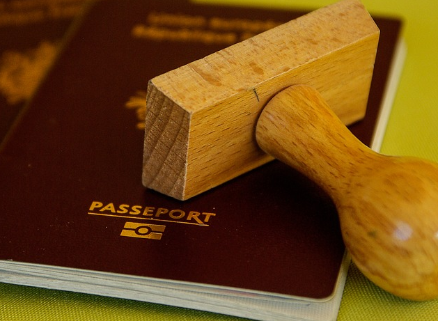
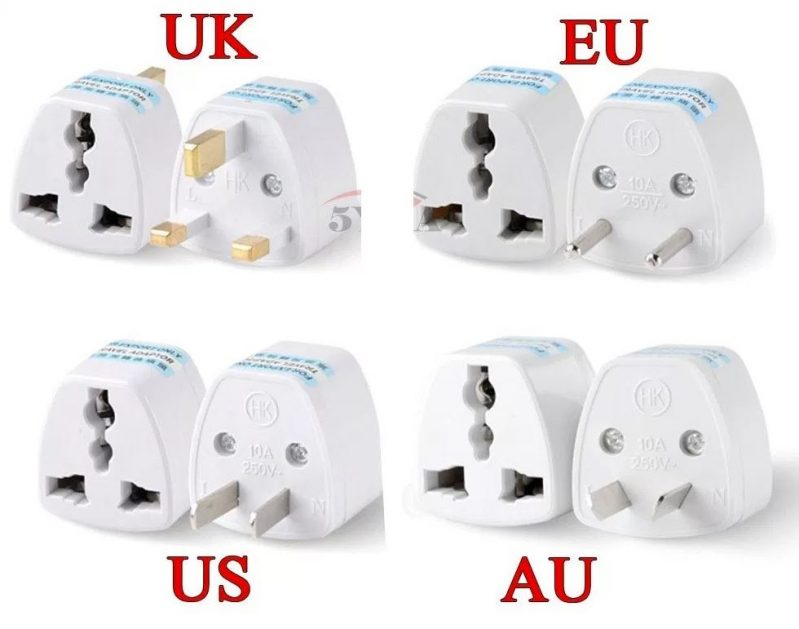
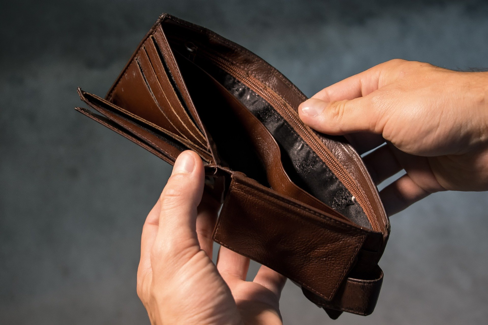

Você está se planejando para sua viagem internacional e ficou em dúvida na hora de fazer a mala?
Esse post tem o intuito de te ajudar com um check list de 5 itens ESSENCIAIS para sua viagem internacional.
Este post foi feito baseado em uma pesquisa online, que contou com 109 viajantes que colaboraram com o seu conhecimento. Foram selecionados os itens com mais votos como “necessário” para serem exibidos aqui. Muito obrigada a todos que participaram.
5 itens essenciais para uma viagem internacional
1. Documentos para viajar de avião, fique com todos à mão
Sempre que for viajar, lembre-se de ter em mãos pelo menos um dos exemplos dos seguintes documentos válidos para clientes maiores de 12 anos:
• Carteira de Identidade (RG);
• Carteira Nacional de Habilitação (CNH, modelo com foto) e CNH-e (modelo eletrônico).
• Carteira Profissional;
• Cartões de Identidade expedidos pelos ministérios e órgãos subordinados ao Presidente da República;
• Certidão de Nascimento (para clientes de 0 a 12 anos incompletos);
• Carteiras Profissionais emitidas pelos Conselhos Nacionais;
• Passaporte nacional;
• Carteira de identidade funcional dos membros do Poder Legislativo da União, dos Estados, do Distrito;
• Federal e dos Municípios expedida no curso da legislatura vigente.
Para estrangeiros: Passaporte, Registro Nacional de Estrangeiros (RNE), Identidades Diplomáticas e Consulares
Pode ser original ou cópia autenticada, desde que seja um documento de identificação válido e com foto. Ele deve ser apresentado tanto no check-in como no portão de embarque para um dos nossos atendentes.* Em caso de roubo, furto ou extravio de documentação, será aceita a apresentação de Boletim de Ocorrência emitido dentro do prazo de 30 dias e que não conste a validade no documento. O B.O. somente não é aceito para o embarque de menores de 12 anos.
2. Adaptador de tomada universal
Um adaptador de tomadas adequa o seu conector a diferentes tipos de tomada. Ele é essencial para um viajante que vai precisar usar tomadas no país que está visitando. Ele tem o formato para diferentes tomadas, tanto a entrada quanto a saída. É imprescindível!
Ele quase não vai ocupar espaço na sua mala, mas a utilidade de um adaptador universal será imensa ao ver que a tomada do seu quarto do hotel não é compatível com seu aparelho. Em muitos lugares, até mesmo no Brasil, existem padrões de tomadas diferentes, então, não deixe de levar este item!
3. Cadeados

Este é um cadeado com a segurança TSA, onde há um tipo de chave mestre padrão para abrir os cadeados. Este tipo de cadeado vem sido adotado pois em muitos aeroportos fazem a checagem da sua bagagem, e dependendo do cadeado ele é danificado para conseguir abrir.
Com o cadeado TSA não há danos, a chave mestre é usada para abrir e depois seu cadeado é fechado normalmente. Ele obedece um padrão de segurança e é muito importante para quem vai visitar os EUA por exemplo!
4. Medicamentos
Se você faz uso de alguma medicação e vai levar para a viagem, e importante também portar a receita dele. Além dos remédios “coringa” como para dores de cabeça, azia e etc.. Afinal ninguém merece ficar com mal estar durante a viagem e não curtir os passeios.
Ter sempre na mala alguns remédios para dor de cabeça, mal-estar e até curativos, é mais que essencial. Se você costuma sentir dores ou gosta de se prevenir de algo que venha a surgir, não esqueça de levar um kit com todos os medicamentos necessários. Vale ressaltar que em alguns lugares, farmácia podem ser mais difíceis de se encontrar, então, previna-se!
5. Atente-se a quantidade de dinheiro que está levando
A primeira coisa que você deve descobrir é qual moeda o país que você quer visitar usa. As moedas mais comuns procuradas pelos brasileiros são: dólar americano (EUA), libra esterlina (Reino Unido), euro (União Européia) e peso argentino (Argentina). Essas são facilmente encontradas nas casas de câmbio.
O ideal é fazer pequenas compras e sempre ficar de olho no câmbio para trocar quando estiver menor. Dessa forma você não perde tanto, pois sempre há o risco de comprar alto e depois cair ou der sorte de ser o contrário né haha Para viagens grandes, normalmente vou comprando com 4 meses de antecedência. Assim você já tem uma boa parte do dinheiro quando sua viagem estiver bem próxima.
Alguns economistas sugerem comprar tudo de uma vez caso você já tenha o dinheiro, pois ai pode tentar uma cotação melhor na casa de câmbio dependendo a quantidade que você compra.
Lembre-se que você irá comprar o dólar turismo que normalmente é 10 centavos mais caros que o dólar comercial por exemplo.
Viu como agora ficou fácil arrumar sua mala sem deixar para trás nenhum item de extrema utilidade? Aproveite que a USW está sempre com pacotes promocionais e tire sua viagem do papel.
Qualquer dúvida, entre em contato conosco!!
 Dicas de Viagens
Dicas de Viagens Contato
Contato